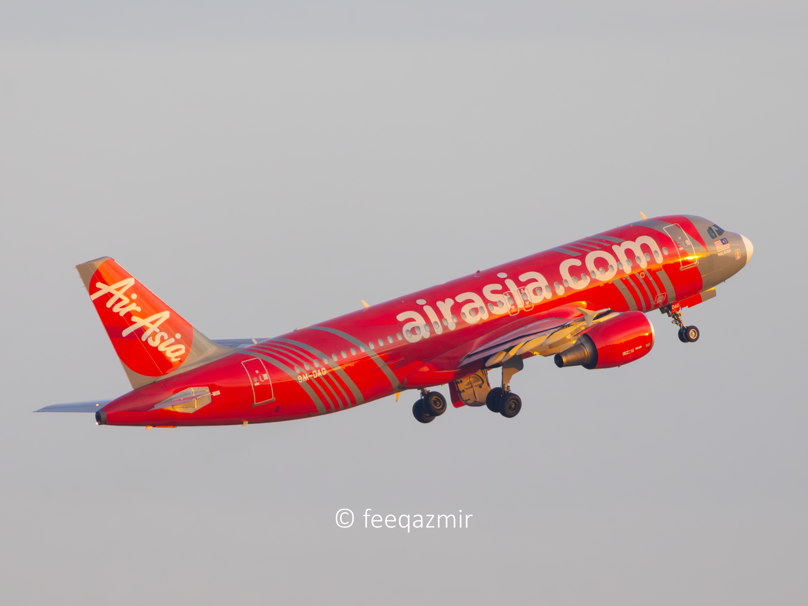

Section 1: What Do I Do?

Even as a full-time student, I like keeping myself busy and productive. One of my favorite things to do is teaching kids chess online. I tutor children aged 13 and below, showing them the fundamentals of chess — how each piece moves, basic tactics, and ways to analyze their games. Teaching has really helped me improve my own patience and focus while sharing a hobby I’ve loved since I was young.
Outside of that, I spend a lot of my free time plane spotting. I’ve always been fascinated by aviation, so when I have free time, I take the LRT to the airport with my camera and just watch planes land and take off. It’s peaceful, and there’s something about the sound of jet engines that clears my mind. I guess it’s a way for me to stay connected to that childhood dream of becoming a pilot.
Section 2: My Favorite Hobbies
I’ve always been the kind of person who enjoys learning and trying new things. My hobbies are a big part of who I am — they help me unwind, stay creative, and keep my curiosity alive.
- Flight Simulation ✈️ — I love experimenting with different aircraft and routes. It’s incredible how realistic flight simulators have become, and it gives me the feeling of being in a real cockpit.
- Reading 📚 — I read anything from aviation stories to tech articles and personal development books. It helps me slow down and think deeper about life and goals.
- Watching Documentaries 🎥 — I enjoy watching documentaries about technology, nature, and real-world innovation. It’s like learning something new without feeling like I’m studying.
- Chess ♟️ — Chess keeps my brain sharp. I like solving puzzles and analyzing tricky endgames. It’s a mental workout I never get tired of.
Section 3: Interesting Facts About Me
I’ve always believed that life becomes more meaningful when we take a few risks and explore what we truly love. Before I joined Software Engineering, I actually took a semester off to chase my dream of becoming a pilot. I didn’t end up flying professionally, but that journey helped me discover my passion for logic and technology — the same drive that pushed me into coding.
I’m also a huge fan of learning things independently. Whether it’s tweaking my PC setup for smoother simulations, learning new programming languages, or just diving deep into random YouTube tutorials, I find joy in figuring things out on my own.
For me, hobbies aren’t just a way to kill time — they’re small reminders of what makes life exciting. Every new interest opens up a new way of seeing the world, and I never want to stop exploring that.